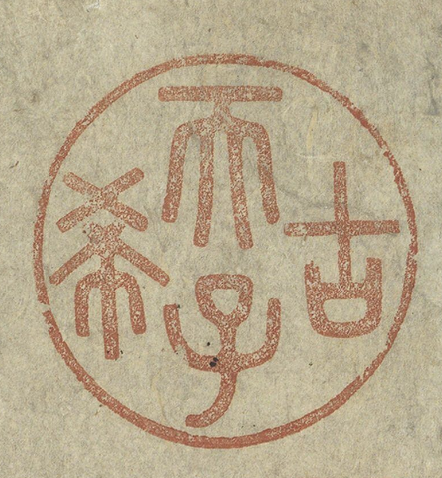

古希天子 “Gu Xi Tianzi”
“Son of Heaven, Rare since Antiquity”

Palace Museum, Beijing
Historical Background: The Seal’s Origin
The seal reading “古希天子” (Gu Xi Tianzi)—a deliberate play on the classical phrase gu xi (古稀), meaning “rare to reach seventy”—belongs to the Qianlong Emperor. It was created to mark the singular occasion of his seventieth birthday in 1780. The physical seal itself is a remarkable object in its own right. According to the emperor’s own inscription recorded alongside it, the “Gu Xi Tianzi” circular seal was carved from an antique jade axle-head: the original jade piece was cut in two, one half fashioned into an archer’s thumb ring, the other shaped into the round seal. Qianlong noted that the seal was carved in the autumn of the 47th year of his reign (1782) and used specifically to authenticate calligraphy and paintings. The fact that it was fashioned from a repurposed antique object was entirely deliberate: in Qianlong’s aesthetics, ancient jade carried accumulated cultural authority, and using it for his most personal commemorative seal was itself a statement about the depth of his connection to Chinese antiquity.